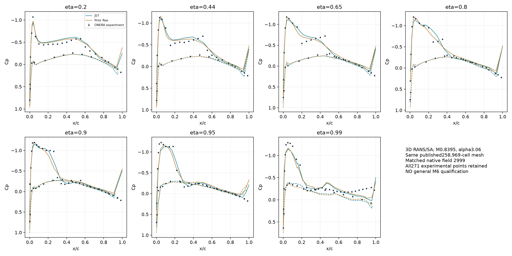
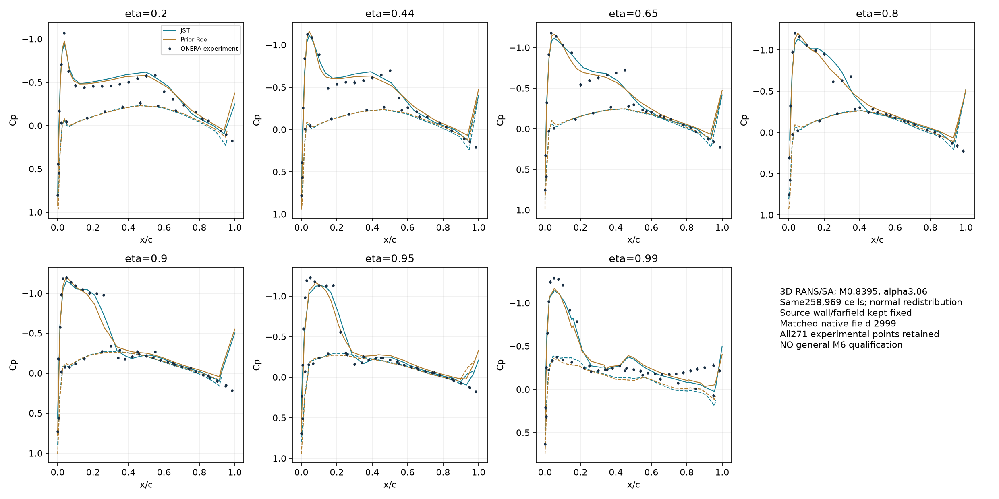
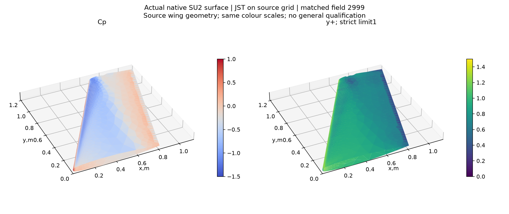
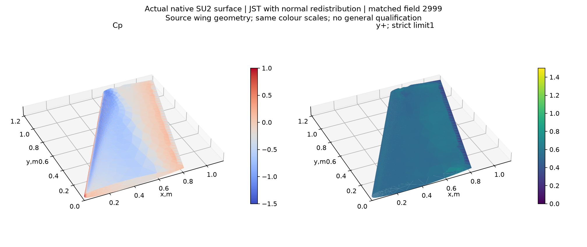

RAE testleri kapandı; ONERA M6 gerçek3B CFD ile sınandı
24 Ekim2026 · Ayrı benchmark projesi: ONERA M6 · Gerçek İHA girdileri korunuyor.
Asgari genel yeterlilik: GEÇMEDİ. Başarılı program çıkışı ve geçen tek kapı, bütün doğrulama değildir.
Ne yapıldı?
Önce RAE2822 araştırma/test paketi14 native deneme kaydıyla dondurulup kapatıldı. Ardından kaynak ONERA M6 kanadında iki yeni3B sıkıştırılabilir RANS/SA koşusu çalıştırıldı. Kanat internetteki özgün SU2 kaynak ağından geliyor; yeniden tasarlanmadı. NASA'nın barındırdığı Schmitt–Charpin ONERA deneyiyle bütün271 basınç noktası karşılaştırıldı.
RAE kaynak araştırması, C-grid ve başarısızlık raporu · M6 başlamadan önceki kapanış kaydı
Koşullar önceden sabit: M=0,8395, alfa=3,06°, beta=0°, Re=11,72milyon, referans veter0,64607m.288,15K sıcaklık önceki kaynak örneğin hesap koşuludur; tünelde ölçülmüş sıcaklık diye sunulmuyor. Yarım kanat adyabatik/no-slip, kök simetri ve uzak alan kullanıldı. Ref alan0,76131555m² ve moment merkezi(0,25;0;0)m korundu.
Birinci yeni test aynı ağda Roe/MUSCL→JST politikasını sınar. İkinci test aynı JST config ve aynı başlangıç dosyasıyla yalnız iç duvar-normal noktalarını değiştirir. Kaydırılmış noktaya aynı indeksle atanan eski alan başlangıç tahminidir; tekrar yakınsama zorunludur.3.000'adım koşular dört CPU iş parçacığıyla gerçekten çalıştı.
Ölçülen sonuçlar
CL/CD sayısal kuvvetlerdir; bu arşivde deneysel kuvvet kıyası yapılmadı. Deney kıyası Cp'ye aittir. “Daha düşük CD” daha iyi kanat tasarımı demek değildir; kanat sabit, sayısal yöntem/ağ değişiyor.
| Ayrı kabul kapısı | JST kaynak ağ | JST normal ağ |
|---|
| İteratif kabul | geçmedi | geçmedi |
| Max y+ < 1 | geçmedi | geçti |
| 14 kesit/yüzey RMSE < 0,08 | geçmedi | geçmedi |
| Aynı geometride üç sistematik ağ / bölgesel BL / uzak alan | açık | açık |
| Genel kabul | geçmedi | geçmedi |
Eski M6 eşikleri değişmedi: log yoğunluk<−7, son100 CL aralığı<2e−4, CD aralığı<2e−5; maxy+<1 ve her14 kesit/yüzeyde CpRMSE<0,08. NASA'nın±0,02 ölçüm belirsizliği ayrı bilgidir; evrensel CFD kabul eşiği yapılmadı.
Hücre sayısı yerine konuma göre normal aralık
Her iki yeni ağda258.969hücre ve100.592düğüm var.3.290 duvar-normal sütun bulundu;25 katman ve kaynak dış katman arayüzü korundu. Eski kendi y+ alanına göre ilk aralık yerel olarak azaltıldı; hedef tasarım y+0,5. Medyan ilk mesafe1.770→0.895µm. Kaynak kanat/uzak alan noktaları ve bütün hücre bağlantıları bit düzeyinde aynı;95.344 tetrahedronun noktaları da değişmedi.
Prizma Jacobian minimumu kaynakta2.46e-12, yeni ağda9.328e-13;163.625 prizmada katlanma bulunmadı. SU2'nin düğüm/yüz yönelimine göre tek sabit referans dönüşümü kullanıldı. Yanlış işaretli hücreyi tek tek çevirerek kabul ettirme yapılmadı. İlk iki taslağın parser/referans düzeltmeleri kayıtlı; onlar için çözücü ağı üretilmedi.
Bu yeniden dağıtımın bedeli görünür: büyüme medyanı1.400→1.445, maksimumu1.489. Toplam sütun kalınlığı medyan19.86mm kaldı. İlk y+ kabulü bütün sınır tabakasını çözdüğümüzü kanıtlamaz; normal hız/viskozite profili ve daha düşük büyümeli sistematik aile ayrıca gereklidir.
Sonuçtan önce normal tasarım kaydı · Aralık/büyüme/Jacobian ölçümleri
Rüzgâr tüneli kıyası: bütün noktalar


Noktalar, hücum/firar ve şok çevresi dahil korunur. Kaynak .ex −Cp ve Tecplot Cp işareti14 grupta denetlendi. Ana kesit6 eta0,95; Tecplot'taki0,96 yorumu da ayrı duyarlılık çıktısında saklandı. Daha iyi hata veren yorum sonradan seçilmedi. Kaynak yuvarlak uç yaklaşık1,21809m'ye uzanırken deney nominal yarı açıklığı1,1963m'dir; kesitlerdeki kaynak geometri mesafeleri CSV'de tutulur. Bu yaklaşık kaynak yüzeyini deneyin kusursuz CAD eşdeğeri saymıyoruz.
Gerçek alanlar ve bağımsız kuvvet okuması


| Vaka | CD basınç | CD yüzey sürtünmesi | Bağımsız CL farkı | Bağımsız CD farkı |
|---|
| Önceki Roe / kaynak ağ | 0.0286926 | 0.0045937 | 0.0007% | 0.0872% |
| JST / kaynak ağ | 0.0217826 | 0.0049633 | 0.0011% | 0.1174% |
| JST / konumsal normal ağ | 0.0216928 | 0.0051142 | 0.0014% | 0.1272% |
Her duvar yüzeyi tek akış komşusuyla eşleştirildi; normalin yönü akış hücresi merkezinden belirlendi. Cp ve vektör Cf yüzey integrali native kuvvetlerle ayrı karşılaştırıldı. İşaret deney sonucuna uydurulmadı. Basınç bileşeni yalnız dalga sürüklemesi diye etiketlenmez. Kuadratur ve Float32 çıktı hataları var; bu kontrol deneysel kuvvet doğrulaması değildir.
Her görünüm6.545 gerçek yüzey üçgeniyle Gmsh SDK ve ayrıca native Gmsh programında geri okundu.3B hacim VTU, yeniden başlatma, aynı iterasyonun yüzeyi ve geçmişi korunuyor. Süre sonundaki farklı bir alan eski kuvvet satırıyla birleştirilmedi.
Açık kalan teknik iş
Son pencerelerde doğrusal çözücü10 adım sınırına dayanıyor. İstenen tolerans1e−5, raporlanan LinSolRes ayrıca ham geçmişte var. Bu bir teşhis ipucudur; sınırın tek neden olduğunu kanıtlamaz. Sonraki kontrollü deneme, aynı mesh/fizik/restart ile aynı restarttan doğrusal iterasyon sınırı10 ve40 için iki ayrı1.000-adımlık koşuyu kıyaslayıp aynı kalıntı/kuvvet kapılarını sınamak olmalıdır.
Genel kabul için deney farkları, normal katmanın tamamı, aynı geometride sistematik üç ağ ve uzak alan duyarlılığı hâlâ açık. Yakınsamayan iki çözümden GCI/Richardson hata bandı verilmedi. Bu sabit M6 benchmarkı keyfi CAD'den otomatik3B CFD, gerçek İHA veya uçuşa elverişlilik kabulü değildir.
İlk native başlatma MUSCL_FLOW=YES ile JST'yi reddetti. Gerekli NO ayarı ayrı sürümde uygulandı; hatalı config/log korunuyor. Çalışmayan deneme için Cp/y+ üretilmedi. Temel yazılım kontrolleri26/26 geçti; bu test sonucu fizik kabulünü değiştirmez.
Güncelleme UTC:2026-10-24T13:38:39.527147+00:00. Eski raporlar ve gerçek İHA girdileri değişmedi.